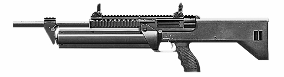

M1216半自動霰彈槍

SRM M1216是一系列由美國槍械製造商薩姆武器公司所設計和生產的16發可拆卸式四管旋轉彈筒供彈兼延遲反衝式半自動散彈槍（戰鬥散彈槍），設計為機動性、輕量化、短槍身，給家庭防衞和執法機關使用，發射12鉛徑散彈。
- SRM M1216採用了傳統型滾輪延遲反衝式操作原理，與著名的HK G3系列自動步槍的結構相彷，這對於散彈槍而言卻是相當不尋常的事。它採用了由兩個部分組成並且在其機頭以上的兩個滾輪所組成的槍機，用以進入槍管延伸部內的凹槽的延遲反衝作用系統。這種設計主要優點是比氣動式槍機和後座作用的設計簡單，可以有效承受12鉛徑散彈對槍機的後座力。使用滾輪延遲反沖時槍管為固定式，這樣也使準確度提高。